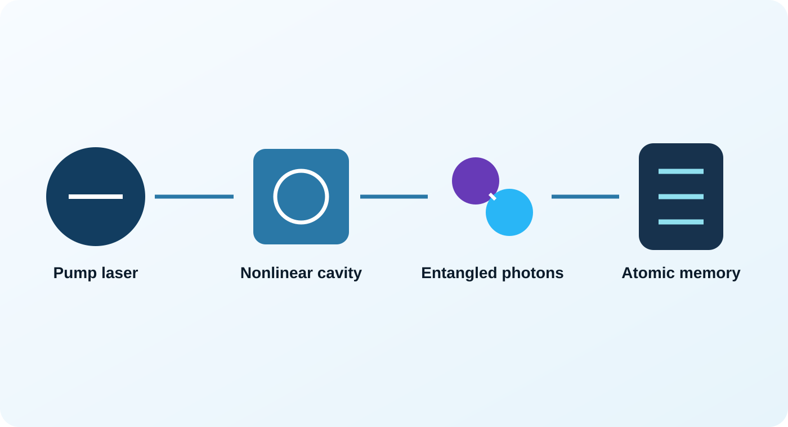
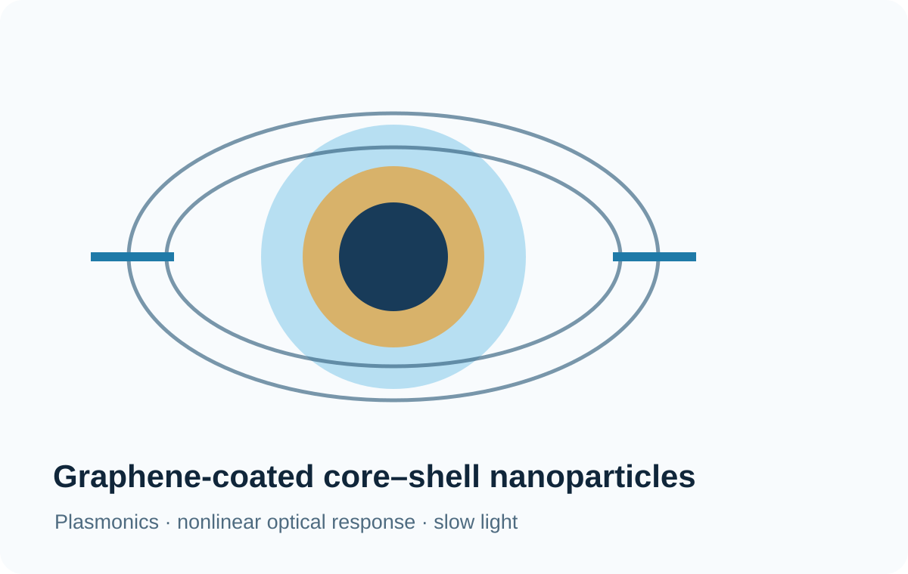

Quantum Optics & Entanglement
Narrowband entangled-photon sources and cavity-enhanced quantum optics.
Quantum optics, entanglement, quantum memories, plasmonics, and nonlinear optics.
Research Themes
Narrowband entangled-photon sources and cavity-enhanced quantum optics.
Experimental work with cesium- and rubidium-based quantum-memory platforms.
Optical bistability, surface plasmons, core–shell nanoparticles, and optical forces.
Graphene multilayers, coherent perfect absorption, broadband infrared absorption, and photonic structures.
Current Project
Development and characterization of a compact narrowband entanglement source for experiments interfacing photons with atomic quantum memories.

Published Work

Methods
Selected Outputs